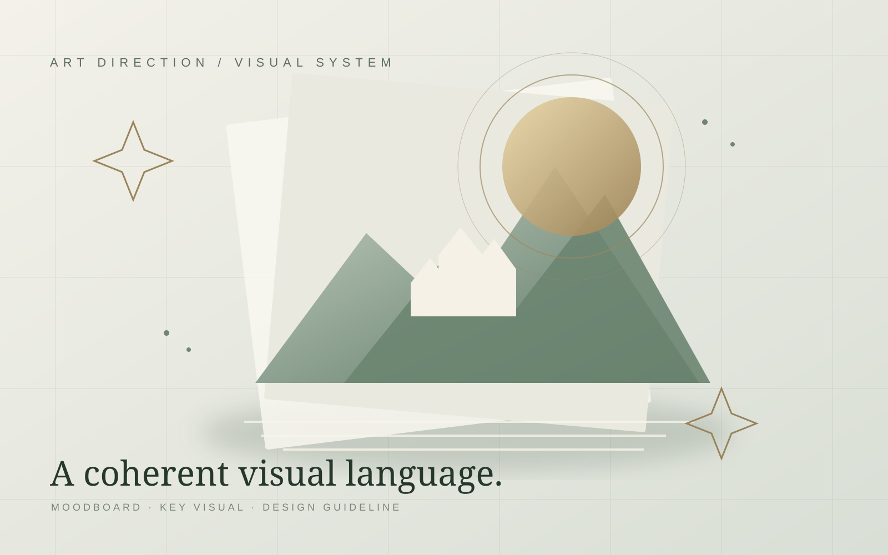

SELECTED WORK / 2026
项目案例。
以角色叙事、AI 视觉与动态影像为核心，记录从创意概念、视觉探索到制作方法的过程。
 CHARACTER / MUSIC / HEALING01
CHARACTER / MUSIC / HEALING01绯音 — 声音与治愈↗
围绕音乐、舞台与情绪转化构建角色视觉叙事。
 FANTASY / STORY / CINEMATIC02
FANTASY / STORY / CINEMATIC02青羽 — 风中的承诺↗
以人物经历与情感关系为线索，探索短篇角色 PV 的叙事结构。

ART DIRECTION / DESIGN SYSTEM03版本主题视觉系统↗
从情绪板到最终落地，建立可复用的游戏版本视觉包装流程。
页面中的抽象图形为概念占位视觉，用于表达项目方向；并非最终项目截图或已交付成果。可在后续替换为真实作品图片、视频与过程稿。